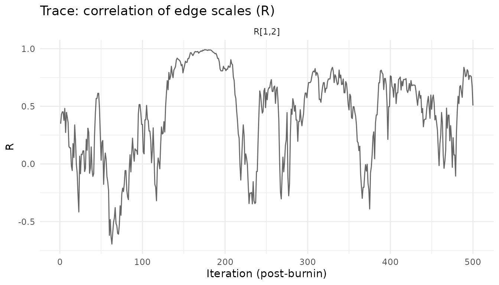

The Multiple Graphical Horseshoe (mGHS)
mghs-horseshoe.RmdOverview
method = "mghs" fits the multiple graphical horseshoe of
Busatto & Stingo (2025, JCGS). The sampler is adapted from
the authors’ code (github.com/cbusatto/mGHS) and reproduces its draws
exactly for the same seed. Local fixes and the validation are documented
in system.file("mghs", package = "multiGGM").
Continuous shrinkage versus spike-and-slab
The G-Wishart ("gwishart") and SSVS
("ssvs") samplers have a binary indicator
for every edge. Each draw says which edges are in each graph, so the
package can report posterior inclusion probabilities
(pip_edges()) and the probability that an edge is in one
graph but not the other (pip_diff_edge()). Groups borrow
strength through an MRF prior on those indicators.
The mGHS has no indicators. Each precision entry gets a horseshoe prior with a global scale and a local scale . Small entries are shrunk strongly towards zero but are never exactly zero. Groups borrow strength through a correlation matrix that correlates each edge’s local scales across groups. gives independent graphical horseshoes.
So for mGHS fits:
-
pip_edges(),pip_diff_edge(),edge_counts()and the plots built on them stop with an error, rather than returning a number with a different meaning. - Edge strength comes from the posterior of the precision matrix or
partial correlations (
coef(),fitted(),posterior_pcor(),posterior_ci()). - Differential edges come from the posterior of the group difference
(
diff_summary(),select_diff_edges()).
Fitting
library(multiGGM)
sim <- simulate_multiggm(K = 2, p = 12, n = 60, perturb_prob = 0.2, seed = 1)
fit <- multiggm_mcmc(data_list = sim$data_list, method = "mghs",
burnin = 500, nsave = 500, seed = 1)
fit
#> <multiggm_fit>
#> K groups: 2
#> p nodes : 12
#> Sampler : mGHS (multiple graphical horseshoe)
#> Posterior draws: 500
summary(fit)
#> multiGGM MCMC Summary (mGHS, multiple graphical horseshoe)
#> ==========================================================
#> Groups (K): 2 | Nodes (p): 12 | Saved draws: 500
#> Post-burn-in iterations: 500 | Attempts: 2
#>
#> Posterior mean of R (correlation of edge scales across groups):
#> [,1] [,2]
#> [1,] 1.000 0.418
#> [2,] 0.418 1.000
#>
#> Posterior mean global shrinkage tau per group:
#> [1] 0.0022 0.0014
#>
#> No edge-inclusion indicators: use select_diff_edges() or diff_summary()
#> for differential edges and posterior_ci() for edge strength.The trace of replaces the trace of the MRF samplers:
plot_trace(fit, "theta")
Differential edges and Bayesian FDR
diff_summary() gives one row per edge: the posterior
mean and standard deviation of
,
a credible interval, and
for each threshold
.
ds <- diff_summary(fit, scale = "pcor", deltas = c(0.05, 0.1))
head(ds[order(-ds$p_exceed_0.1), ])
#> i j mean sd lower median upper
#> 6 3 4 -0.3527970 0.1249140 -0.5795079298 -0.3584738 -0.06939857
#> 65 10 12 0.3149062 0.1486431 0.0007256321 0.3302036 0.56660615
#> 1 1 2 -0.1994676 0.1791820 -0.5020627843 -0.1989438 0.17036425
#> 25 4 8 0.1830435 0.1415300 -0.0453670684 0.1937620 0.45110836
#> 66 11 12 -0.1210339 0.1649079 -0.4478402745 -0.1119946 0.21586969
#> 20 5 7 -0.1113987 0.1591270 -0.3962534596 -0.1102332 0.20513381
#> excludes_zero p_sign p_exceed_0.05 p_exceed_0.1
#> 6 TRUE 0.994 0.984 0.968
#> 65 TRUE 0.976 0.926 0.892
#> 1 FALSE 0.860 0.878 0.774
#> 25 FALSE 0.894 0.808 0.718
#> 66 FALSE 0.780 0.758 0.616
#> 20 FALSE 0.748 0.750 0.606select_diff_edges() selects the largest set of edges
whose posterior expected false discovery rate is at most
alpha:
sel <- select_diff_edges(fit, alpha = 0.05, delta = 0.1)
sel
#> <multiggm_diff_selection>
#> Groups 1 vs 2, rule: magnitude (P(|D| > 0.1), pcor scale)
#> Selected 1 edges at target FDR 0.05 (posterior expected FDR 0.032)
#> i j prob mean
#> 1 3 4 0.968 -0.352797Calibration caveat: do not use “the interval excludes zero”
It is tempting to call an edge differential when its credible
interval for
excludes zero, i.e. to run Bayesian FDR on
(the p_sign column). Under a continuous prior this
is badly anti-conservative.
,
so p_sign is not the probability that the edge differs. An
edge with the same true value in both groups still has an
estimated
of sampling-noise size, and with large
its posterior is concentrated enough to give p_sign near 1.
In a simulation with p = 100 and n = 1000 per group, Bayesian FDR on
p_sign gave an achieved FDR of about 0.50 at a nominal
0.05; the false calls were edges with identical true values whose
was about 0.04 to 0.08.
The same applies to the SSVS sampler (its spike is a normal distribution) and to G-Wishart edges present in both groups.
Use
with a
that is meaningful for your problem. The FDR is then controlled for the
hypothesis
:
a true difference smaller than
counts as a null. For the indicator-based samplers,
rule = "structural"
()
is also available.
Memory, thinning and summary-only fits
Saved draws take
nsave bytes per chain: 160 MB at p = 100, K = 2 and 1000
draws. Two ways to reduce this:
-
thin: the sampler runs every iteration but saves everythin-th draw. -
save_draws = FALSE: no draws are kept. The sampler keeps running sums over every post-burn-in iteration of the posterior means and of (mean, SD, , and for the thresholds indiff_deltas).coef(),fitted(),diff_summary()andselect_diff_edges()use these; credible intervals and other draw-based functions are unavailable.
lean <- multiggm_mcmc(data_list = sim$data_list, method = "mghs",
burnin = 500, nsave = 500, nchains = 2, seed = 2,
save_draws = FALSE, diff_deltas = c(0.05, 0.1))
select_diff_edges(lean, alpha = 0.05, delta = 0.1)
#> <multiggm_diff_selection>
#> Groups 1 vs 2, rule: magnitude (P(|D| > 0.1), pcor scale)
#> Selected 1 edges at target FDR 0.05 (posterior expected FDR 0.019)
#> i j prob mean
#> 1 3 4 0.981 -0.3619992Chains are pooled by default in diff_summary() and
select_diff_edges().
Stuck chains and run time
The sampler inherits a guard from the authors’ code: if a local-scale
update would use parameters above
,
the chain is declared stuck. This happens when the global scale
collapses or
approaches a singular matrix, and it is more frequent for small, sparse
problems. With p = 12 and n = 150 per group, 5 of 6 chains got stuck
within 2,000 iterations, in both the authors’ code and this package.
With n = 50, none of 6 did, and in a simulation study at p = 100 and n =
1000 all 100 fits completed, some after a restart. The package also
checks every scale draw for non-finite values and caps every rejection
loop, so a chain can no longer hang. A stuck chain is restarted from
scratch (up to max_attempts, default 3) and the number of
attempts is reported in summary(). If all attempts fail,
multiggm_mcmc() stops with an error.
Run time per iteration depends strongly on the data, not only on : in our runs it ranged from about 10 to over 100 ms per iteration for .
References
Busatto, C. & Stingo, F.C. (2025). Inference of multiple high-dimensional networks with the Graphical Horseshoe prior. Journal of Computational and Graphical Statistics. doi:10.1080/10618600.2024.2435480
Busatto, C. & Stingo, F.C. (2025). The multiple graphical horseshoe: an application to breast cancer data. In SIS 2025, 435-440. Springer.
Li, Y., Craig, B.A. & Bhadra, A. (2019). The graphical horseshoe estimator for inverse covariance matrices. Journal of Computational and Graphical Statistics, 28(3), 747-757.
Newton, M.A., Noueiry, A., Sarkar, D. & Ahlquist, P. (2004). Detecting differential gene expression with a semiparametric hierarchical mixture method. Biostatistics, 5(2), 155-176.